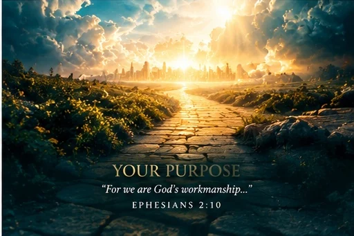

Imagine
See beyond present circumstances through faith, trusting in God’s power and purpose.
Ephesians 3:20; Hebrews 11:1Our purpose
A Winner’s Mindset is rooted in the mind of Christ, obedience to God’s Word, and faith in His promises.

Our vision
We envision believers growing in Christ, walking by faith, overcoming challenges through Him, and faithfully fulfilling God’s purpose for their lives.
Our mission
Our four guiding principles help connect biblical truth to purposeful action.
See beyond present circumstances through faith, trusting in God’s power and purpose.
Ephesians 3:20; Hebrews 11:1Apply God’s Word with wisdom, creativity, and excellence, using the gifts He has given us.
Colossians 3:23; Exodus 35:31–32Put faith into action through obedience to God’s Word and faithful service.
James 1:22; James 2:17Search the Scriptures, seek God’s wisdom, and exercise spiritual discernment.
James 1:5; Acts 17:11Our Foundation Is Jesus Christ · 1 Corinthians 3:11

Proverbs 29:18 · KJV
Vision must remain connected to God’s revealed instruction.
Habakkuk 2:2–3 · KJV
God tells Habakkuk to record His revelation and wait faithfully for its appointed time. The passage is not a guarantee of personal plans.
Matthew 28:19–20 · KJV
Make disciples and teach the commands of Christ.
Scripture and our four principles
These are applications of biblical principles, not claims that the verses name our four principles.
Ephesians 3:20 · KJV
In Paul’s prayer for spiritual strength and growth in Christ, God is able to do beyond all we ask or think.
Isaiah 43:19 · KJV
In its original context, God promises restoration to His people; this is not a promise that every new idea will succeed.
James 2:17 · KJV
Living faith expresses itself in action.
Acts 17:11 · KJV
Examine the Scriptures carefully.